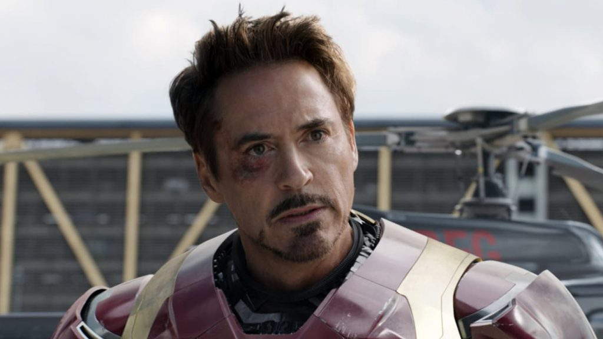
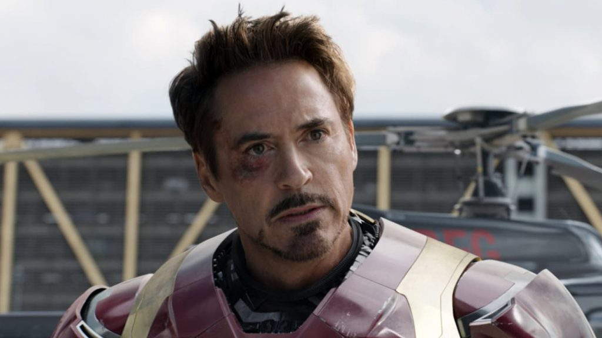

Biografia
O Homem de Ferro, ou seja, Iron Man, é um personagem de quadrinhos da Marvel Comics, criado em 1963 por Stan Lee, que aceitou o desafio de fazer um personagem ser odiado e depois amado pelo público, resultando em um grande sucesso, pois criou um herói marcante e que apesar de ter uma personalidade difícil e contrária a de muitos heróis acabou agarrando o coração do público com o tempo; já que era, de fato, incomum um herói com tal personalidade.
A verdadeira identidade do Homem de Ferro é a do empresário e bilionário Tony Stark, que utiliza armaduras feitas por si mesmo para combater o crime, criadas com a mais alta técnologia.
A primeira publicação foi em Tales of Suspense #39 (história publicada pela primeira vez no Brasil em Heróis da TV #100). É um dos personagens mais conhecidos e um dos mais amados de todo o universo Marvel. Se tornou um membro dos Vingadores e continuou sendo até sua morte no filme Vingadores: Endgame.
Robert Downey Jr.
Robert John Downey, Jr. (Nova Iorque, 4 de abril de 1965) é um ator, compositor e pianista americano. Estreou sua carreia de ator em 1970, com sua participação no filme Pound quando tinha 5 anos de idade, filme que foi dirigido por seu pai. Atualmente tem realizado diversos trabalhos para o cinema.
Dentre diversos papéis e filmes que participou, Robert realizou o papel do Homem de Ferro, participando em diversos filmes do universo cinematográfico da Marvel, sendo onde ganhou maior notoriedade do público, realizando um excelente trabalho em cada filme.
 
